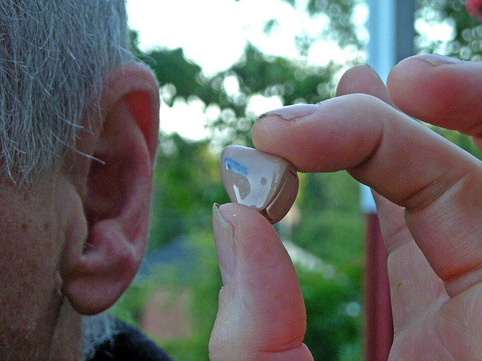

Información divulgativa. No sustituye la valoración de un profesional sanitario. Ante síntomas neurológicos bruscos (boca torcida, debilidad de un lado, dificultad para hablar) llama al 112.


Qué es
La enfermedad de Ménière es un trastorno crónico del oído interno que produce crisis de vértigo acompañadas de síntomas del oído. Se asocia a un exceso de endolinfa, el líquido que llena el laberinto (hidrops endolinfático). Afecta a alrededor de 1 de cada 1.000-2.000 personas, suele empezar entre los 40 y los 60 años y es algo más frecuente en mujeres. Lleva el nombre del médico francés Prosper Ménière, que en 1861 demostró que el vértigo podía originarse en el oído y no en el cerebro.
Síntomas
Las crisis combinan:
- Vértigo intenso, con sensación de giro, náuseas y vómitos, que dura de 20 minutos a 12 horas.
- Pérdida de audición en un oído, al principio de los tonos graves y fluctuante.
- Acúfenos: zumbido o ruido en el oído.
- Plenitud ótica: sensación de oído taponado o de presión.
Entre las crisis la persona puede estar bien, aunque con los años la audición empeora de forma permanente y puede quedar inestabilidad. En un tercio de los pacientes se acaba afectando el otro oído. Algunos sufren crisis de Tumarkin: caídas bruscas al suelo sin perder el conocimiento.
Las crisis aparecen en racimos imprevisibles, lo que genera mucha ansiedad e interfiere en el trabajo y la vida social.
Diagnóstico
- Historia clínica: dos o más crisis de vértigo de 20 minutos a 12 horas, con síntomas auditivos del mismo oído.
- Audiometría, que demuestra la pérdida auditiva de tonos graves.
- Pruebas vestibulares (videonistagmografía, prueba de impulso cefálico, potenciales miogénicos).
- Resonancia para descartar un schwannoma vestibular; con contraste intratimpánico puede mostrar el hidrops.
Hay que distinguirla de la migraña vestibular, muy frecuente y a veces asociada. Ver vértigo y ¿mareo o vértigo?.
Tratamiento
No hay un tratamiento que cure la enfermedad, pero sí que reduce las crisis:
En la crisis: reposo, sedantes vestibulares y antieméticos durante el menor tiempo posible.
Para prevenir crisis (escalonado):
- Dieta baja en sal, evitar la cafeína y el alcohol, buen descanso y manejo del estrés.
- Betahistina (su eficacia es discutida) o diuréticos.
- Corticoides intratimpánicos: se inyectan a través del tímpano.
- Gentamicina intratimpánica: destruye de forma controlada parte del oído del equilibrio para eliminar las crisis, con riesgo para la audición.
- Cirugía en casos rebeldes: descompresión del saco endolinfático, sección del nervio vestibular o laberintectomía.
Audífonos o implante coclear para la pérdida auditiva, y rehabilitación vestibular para la inestabilidad. Ver tratamiento del vértigo.
Historia · Medicapedia
La historia de esta enfermedad
Cómo se describió, quién la estudió y cómo ha cambiado su tratamiento a lo largo de los siglos, en Medicapedia, nuestra enciclopedia hermana de historia de la medicina.
Fuentes
- Lopez-Escamez JA, et al. Diagnostic criteria for Menière's disease. J Vestib Res. 2015;25:1-7.
- Basura GJ, et al. Clinical practice guideline: Ménière's disease. Otolaryngol Head Neck Surg. 2020;162:S1-S55.
- Nakashima T, et al. Meniere's disease. Nat Rev Dis Primers. 2016;2:16028.
- Adrion C, et al. Efficacy and safety of betahistine treatment in patients with Meniere's disease (BEMED). BMJ. 2016;352:h6816.